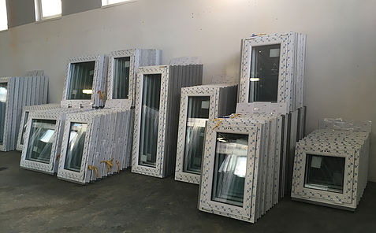
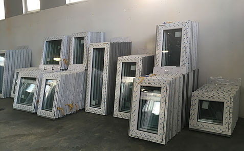
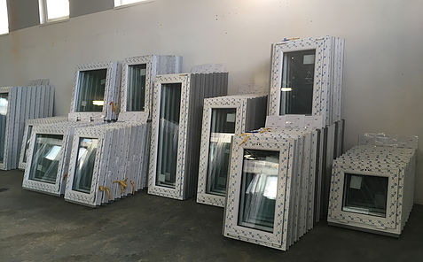
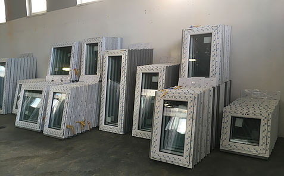

 

Die Montagequalität ist mindestens genauso wichtig wie die Qualität des Fensters. Eine unsachgemäße Installation kann dazu führen, dass das Fenster von guter Qualität grundsätzlich störend wirkt. Daher bieten wir die Installation durch autorisierte, geschulte Montagegruppen an, auch wenn die Fensterlieferung durch unsere regionalen Geschäftspartner erfolgt. Wenn Sie interessiert sind, können Sie die Fenster und Türen auch selbst montieren, aber Sie haben die Sicherheit, dass es bei der Montage zu Fehlfunktionen kommen kann.
Vor der Installation empfehlen wir:
Achten Sie darauf, den Bereich vor Schmutz und Staub zu schützen, sofern nicht anders vereinbart.

Wir bieten Ihnen einen kompletten Garantie- und Nachgarantieservice von Fenster- und Abschirmtechnik in unserem Unternehmen. Aufgrund unserer langjährigen Erfahrung bieten wir auch umfassende und professionelle Beratung.